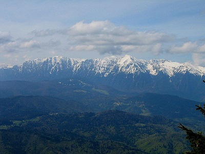

Obiective Culturale Dâmbovița
Munții Bucegi
Masivul Bucegi, cu o suprafață de circa 300 km2, se află la extremitatea estică a Carpaților Meridionali, desfășurându-se între Valea Prahovei la est și culoarul Branului și Valea Ialomiței la vest; cade brusc spre nord către depresiunea Bârsei și spre sud, până la contactul cu Subcarpații de curbură. Se întinde pe teritoriul județelor Dâmbovița, Prahova și Brașov. Fiind de o mare complexitate structurală și morfologică, masivul apare ca o cetate naturală, cu incinta suspendată la 1600 – 2500 m, sprijinită de abrupturi puternice.
Etimologie
Unele denumiri toponimice întâlnite în acești munți ridică interesante probleme de filologie. Numele de Bucegi are o formă arhaică de Buceci. Forma Buceci este identică cu a antroponimicului Bucșa sau că numirea ar fi o variantă a lui Bugeac "un complex de mai multi mușchi care formează un covor verde si moale". În actul ctitoricesc din 1695 al Mănăstirii Sinaia, se spune că mănăstirea a fost ridicată "la pustie sub muntele Buceciul". Numele de Buceci în loc de Bucegi mai este dat masivului, în zilele noastre, de către unii bătrâni din Branul de Sus. Oamenii de pe versantul nordic, estic și cei din partea de miazăzi a munților, ca și locuitorii Branului de Jos, îi numesc cu toți în zilele noastre Bucegi. Lingviștii spun ca huceagul sau buceagul este un păduriș des și jos, ori covorul de mușchi verde și moale, sau chiar pământul pustiu, lipsit de păduri, doar cu buruieni și ierbărie. Localități cu numele Bugeac sau Buceag existau in județele Constanța, Ialomița și Teleorman, Bugeacul istoric din Basarabia, teritoriu aparținând regatului dacic al lui Burebista. Poate că tufele joase de jnepeni, numite și buceag, au dat numele Bucegilor. Lingvistul Sextil Pușcariu susține chiar că Bucșoiul, unul din brațele stelei de munți ce se intâlnesc în vârful Omu, își are numele derivat de la Buc, Bucur (nume autentic dacic), tot așa cum și Buceci, Bugeci, se derivă de la Buc cu acelasi sufix ca în Măneciu sau Moeciu.
Sfinxul din Munții Bucegi
Sfinxul din Munții Bucegi este un megalit antropomorf situat la 2216 m altitudine, în județul Dâmbovița, pe teritoriul administrativ al comunei Moroeni. Originea numelui Sfinxului este datorată asemănării sale cu un cap uman, mai exact cu Sfinxul Egiptean, formarea lui fiind datorată eroziunii eoliene (vântului). Format dintr-un bloc mare de piatră ce a căpătat forma de astăzi într-un timp foarte îndelungat, Sfinxul din Bucegi, aflat pe platoul Bucegi, măsoară 8 metri în înălțime și 12 metri în lățime.
Din punct de vedere istoric și chiar mistic, Sfinxul este reprezentarea unei divinități supreme din timpuri pelasge. Aspectul său omenesc este asociat cu o expresie de suveranitate și putere, acest lucru fiind evidențiat prin fața proporționată, buze severe si bărbia voluntară. Pelasgii au fost anteriori grecilor, triburile lor au fost răspândite mai ales în zona Mării Egee.
În perioada 1966-1968, arhitectul peruan Daniel Ruzo, observase că Sfinxul seamănă cu chipul principal dintr-un ansamblu sculptat într-o stâncă de pe podișul Marcahuasi, din Peru, numit „Monumentul Omenirii”: «Sfinxul nu reprezintă doar un singur chip, fiind înconjurat de altele, dar din rase diferite, precum și de capul unui câine, care are rol de străjer al unei comori aflată într-o „peșteră a tezaurului” în apropierea Omului».
Se spune că acest loc a fost centru energetic folosit pe vremuri de extratereștri, multe legende circulând prin părțile locului în acest sens. În imediata apropiere a Sfinxului se află o anume peșteră ce ar strânge mistere energetice deosebite.[necesită citare] Aceste mistere energetice sunt atracția multor oameni pasionați de acest subiect. Alte zvonuri spun că tot aici ar exista o mină de uraniu, părăsită, ce nu mai este în funcțiune din al doilea război mondial.
În munții României există și alți megaliți care poartă denumirile de sfincși: Sfinxul de la Stănișoara, Sfinxul de la Piatra Arsă, Sfinxul Lainicilor, Sfinxul Bratocei, Sfinxul Bănățean cunoscut și sub denumirea de „Sfinxul de la Topleț”, Sfinxul de la Pietrele lui Solomon, Sfinxul din Munții Gutâiului etc.